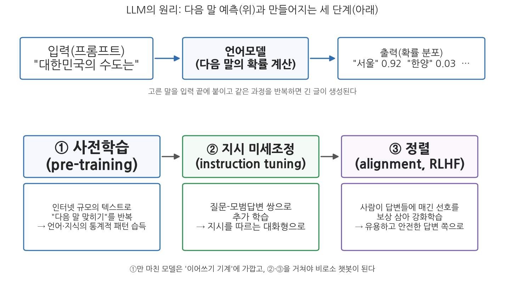
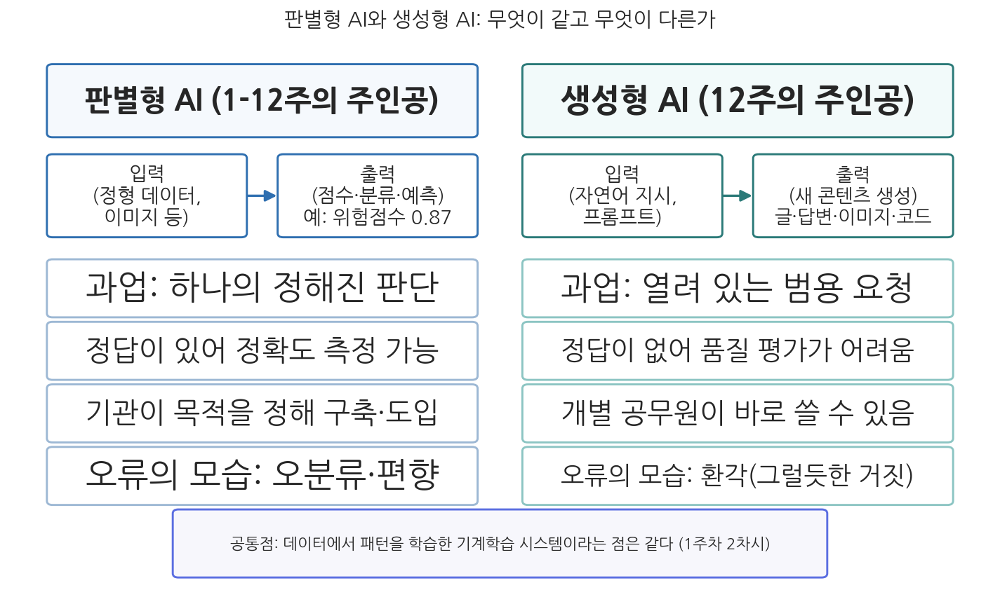

13주차 1차시. 생성형 AI와 행정 (1): 새로운 물결
언어모델은 방대한 학습 데이터에서 관찰한 언어 형식의 연쇄를, 의미에 대한 참조 없이 확률 정보에 따라 이어 붙이는 시스템, 곧 확률적 앵무새다. (에밀리 벤더 외, 「확률적 앵무새의 위험에 대하여」, 2021)
이 장에서 배우는 것
2022년 11월 30일, 미국의 AI 연구기업 오픈AI(OpenAI)가 챗GPT(ChatGPT)라는 대화형 서비스를 공개했다. 닷새 만에 이용자 100만 명, 두 달 만에 1억 명. 소비자 기술 역사상 가장 빠른 확산이었고, 2025년 10월 오픈AI 발표 기준 주간 이용자는 8억 명에 이르렀다. 이 물결은 정부 청사의 담장을 넘지 못할 이유가 없었다. 2025년 10월 국회 위성곤 의원실이 전국 행정기관 종사자 14,208명을 조사한 결과, 68.9%가 챗GPT 같은 생성형 AI를 업무에 써 본 경험이 있다고 답했다. 어떤 부처가 도입을 결정하기도 전에, 일선의 공무원들이 먼저 쓰기 시작한 것이다.
여기서 이상한 점을 하나 눈치챘는가. 우리는 이 교재에서 열한 주 동안 AI와 행정을 공부해 왔다. 재범 위험을 점수로 매기는 알고리즘(5주차), 복지 부정수급을 걸러내는 시스템(2주차), 안면인식 감시(7주차)까지. 그런데 그 AI들은 공무원 개인이 "써 보는" 물건이 아니었다. 기관이 예산을 들여 조달하고, 특정 업무 하나를 위해 구축하는 시스템이었다. 반면 지금 공무원 열 명 중 일곱이 쓰고 있다는 생성형 AI는 보고서 초안도 쓰고, 법령도 찾아 주고, 회의록도 요약해 주는 범용 도구이고, 웹사이트에 접속만 하면 누구나 쓸 수 있다. 같은 "AI"라는 이름을 달고 있지만, 기술의 성격도, 확산의 경로도, 제기하는 문제도 다르다. 이 장은 그 차이를 이해하는 장이다. 구체적으로 다음을 배운다.
- 생성형 AI와 LLM의 원리: "다음 말 예측"이라는 단순한 원리가 어떻게 범용 능력이 되는가
- 학습과 정렬: 이어쓰기 기계가 챗봇이 되기까지의 세 단계
- AI 에이전트의 등장: 답변하는 AI에서 실행하는 AI로 (2024-2026년의 전환)
- 생성형 AI가 바꾸는 행정 업무: 문서 작성, 민원 응대, 정보 검색
- 1-12주의 판별형 AI 논의와 무엇이 다른가: 환각, 범용성, 접근성
이 장은 하나의 질문을 따라 전개된다. "글을 만들어 내는 AI는 판단을 내리는 AI와 무엇이 다르며, 그 차이는 행정에 어떤 새로운 질문을 던지는가?"
1.1 생성형 AI의 원리를 비전공자의 눈높이에서 뜯어본다 (다음 말 예측, 학습과 정렬) → 1.2 답변을 넘어 실행하는 AI 에이전트의 등장을 본다 → 1.3 문서 작성, 민원 응대, 정보 검색에서 무엇이 달라지는지 본다 → 1.4 1-12주의 판별형 AI 논의와의 차이를 환각, 범용성, 접근성의 세 열쇠말로 정리한다.
1.1 생성형 AI의 원리: 다음 말을 예측하는 기계
판별에서 생성으로
1주차 2차시에서 우리는 AI를 "입력 받은 정보를 바탕으로 예측, 콘텐츠 생성, 추천, 또는 물리적 및 가상환경에 영향을 미칠 수 있는 결정을 생성하는 기계 기반 시스템"이라는 OECD(2024)의 정의로 배웠다. 눈 밝은 독자라면 이 정의에 이미 "콘텐츠 생성"이 들어 있음을 알아챘을 것이다. 2019년의 OECD 정의에는 없던 표현이다. 그 5년 사이에 AI의 지형이 바뀌었기 때문이다.
이 교재의 1-12주가 다룬 AI는 대부분 판별형 AI(discriminative AI)였다. 주어진 입력을 보고 정해진 판단을 내리는 시스템이다. 이 사람의 재범 위험은 높은가 낮은가, 이 수급 신청은 정상인가 이상인가, 이 사진 속 인물은 수배자인가 아닌가. 출력은 점수, 등급, 분류였다. 반면 생성형 AI(generative AI)는 판단이 아니라 새로운 콘텐츠를 만들어 낸다. 글, 답변, 이미지, 소리, 컴퓨터 코드까지. 입력도 다르다. 정형화된 데이터가 아니라 "다음 보도자료 초안을 세 문단으로 써 줘" 같은 일상 언어의 지시, 곧 프롬프트(prompt)다.
생성형 AI는 학습한 데이터의 패턴을 바탕으로 글, 이미지, 소리, 코드 등 새로운 콘텐츠를 만들어 내는 AI를 통칭한다. 그 가운데 글을 다루는 핵심 기술이 대형언어모델(Large Language Model, LLM)이다. LLM은 방대한 텍스트에서 "어떤 말 다음에 어떤 말이 올 확률이 높은가"를 학습한 통계 모델로, 챗GPT, 클로드(Claude), 제미나이(Gemini), 하이퍼클로바X 같은 대화형 서비스의 엔진에 해당한다. 이 장에서 "생성형 AI"라고 쓸 때는 주로 LLM 기반의 텍스트 생성 시스템을 가리킨다.
원리는 하나다: 다음 말 예측
LLM의 원리는 놀랄 만큼 단순하게 요약된다. 다음에 올 말을 예측하는 것이다. "대한민국의 수도는"이라는 입력이 주어지면, 모델은 학습한 텍스트의 통계에 비추어 다음에 올 말의 확률 분포를 계산한다. "서울"이 나올 확률이 압도적으로 높고, "한양"이나 "부산"은 낮다. 모델은 확률 높은 말을 골라 입력 끝에 붙이고, 늘어난 입력을 놓고 같은 계산을 반복한다. 이 단순한 반복이 문장이 되고, 문단이 되고, 보고서 초안이 된다.

그림 13-1을 읽는 법은 이렇다. 위 줄은 LLM이 작동하는 순간의 원리다. 입력(프롬프트)이 들어오면 모델이 다음 말의 확률 분포를 계산하고, 고른 말을 붙여 같은 과정을 반복한다. 아래 줄은 그런 모델이 만들어지기까지의 세 단계, 곧 사전학습, 지시 미세조정, 정렬이다. 이 그림에서 알 수 있는 것은 두 가지다. 첫째, LLM의 생성은 검색이나 추론이 아니라 확률 계산의 연쇄다. 둘째, 우리가 쓰는 챗봇은 원리(위 줄)만으로 만들어지지 않고 세 단계의 공정(아래 줄)을 거친 가공품이다.
"다음 말 맞히기"가 어떻게 번역, 요약, 작문 같은 능력이 되는지 의아할 수 있다. 비결은 규모다. 2020년 공개된 GPT-3은 1,750억 개의 매개변수(모델 내부의 조절 나사에 해당)를 갖추고 약 3,000억 개의 토큰(단어를 잘게 쪼갠 말 조각) 분량의 텍스트로 학습되었다(Brown et al., 2020). 인터넷 규모의 텍스트에는 번역문, 요약문, 질문과 답변, 법령 해설, 온갖 문체의 글이 들어 있다. 그 전부에 대해 "다음 말 맞히기"를 잘하려면, 모델은 결과적으로 문법, 어휘, 사실관계, 글의 구조에 대한 통계적 패턴을 흡수해야 한다. 그래서 다음 말 예측이라는 하나의 훈련 목표에서 여러 언어 능력이 부산물처럼 따라 나온다. 연구자들이 처음부터 설계한 능력이 아니라 규모를 키우자 나타난 능력이라는 뜻에서, 이를 창발적 능력이라 부르기도 한다.
학습과 정렬: 이어쓰기 기계에서 챗봇으로
다만 사전학습(pre-training)만 마친 모델은 아직 챗봇이 아니다. 그저 "이어쓰기 기계"다. "보도자료 초안을 써 줘"라고 입력하면, 지시를 수행하는 대신 "라고 상사가 말했다"라고 이어 쓸 수도 있다. 학습 텍스트에는 그런 문장도 많았기 때문이다. 이어쓰기 기계를 지시를 따르는 조수로 바꾸는 것이 나머지 두 단계다.
둘째 단계는 지시 미세조정(instruction tuning)이다. "질문과 모범답변"의 쌍을 대량으로 만들어 추가 학습시킨다. 이 과정을 거치면 모델은 입력을 "이어 쓸 텍스트"가 아니라 "따라야 할 지시"로 다루기 시작한다. 셋째 단계는 정렬(alignment)이다. 같은 질문에 대한 여러 답변을 사람 평가자에게 보여 주고 어느 쪽이 나은지 고르게 한 뒤, 그 선호를 보상 삼아 모델을 강화학습시킨다. 이것이 인간 피드백 강화학습(RLHF, Reinforcement Learning from Human Feedback)으로, 오픈AI 연구진이 2022년 인스트럭트GPT(InstructGPT) 논문에서 정립한 방법이다(Ouyang et al., 2022). 정렬을 거친 모델은 유용하고, 정중하고, 위험한 요청을 거절하는 쪽으로 다듬어진다. 챗GPT가 시연용 기술이 아니라 수억 명이 쓰는 서비스가 될 수 있었던 것은 이 정렬 단계 덕이 크다.
행정학의 눈으로 한 가지를 짚어 두자. 정렬은 기술 공정인 동시에 가치 판단의 공정이다. "무엇이 좋은 답변인가"를 누군가가 정해서 모델에 심는 과정이기 때문이다. 어떤 질문에 답하게 하고 어떤 질문을 거절하게 할지, 논쟁적 사안에서 어떤 균형을 잡게 할지는 개발사의 선택이다. 6주차에서 본 알고리즘과 여론 형성의 문제, 11주차에서 본 거버넌스의 문제가 여기서 다시 나타난다. 수억 명이 쓰는 모델의 정렬 기준은 사실상 사적인 규범 설정이라는 지적이 그래서 나온다.
언어학자 에밀리 벤더(Emily Bender)와 동료들은 챗GPT 등장 전인 2021년에 발표한 논문에서 LLM을 확률적 앵무새(stochastic parrot)라 불렀다. 의미를 참조하지 않고 학습 데이터의 언어 형식을 확률에 따라 이어 붙일 뿐이라는 것이다(Bender et al., 2021). 반대편에는 다음 말을 정말 잘 예측하려면 세계에 대한 어떤 내적 모델이 필요하며, LLM이 그것을 갖추기 시작했다는 반론이 있다. 이 철학적 논쟁의 승부는 아직 나지 않았다. 그러나 행정 실무의 관점에서 중요한 교훈은 양쪽 모두에게서 나온다. LLM의 유창함은 진실성의 증거가 아니다. 모델은 "그럴듯한 말"을 만들도록 훈련되었지 "참인 말"을 만들도록 훈련되지 않았다. 이 간극이 1.4절에서 볼 환각 문제의 뿌리다.
2022년 11월 30일 공개된 챗GPT는 닷새 만에 이용자 100만 명, 두 달 만에 월간 이용자 1억 명을 넘겨 당시 소비자 인터넷 서비스 사상 최단 기록을 세웠다. 이후에도 성장은 이어져 오픈AI 발표 기준 주간 이용자가 2025년 2월 4억 명, 2025년 10월 8억 명에 이르렀고, 2026년 6월에는 9억 명을 넘었다는 보도(로이터)가 나왔다. 확산은 정부로도 번졌다. 오픈AI는 2025년 1월 연방기관용 챗GPT를 출시하며 미국의 3,500여 연방·주·지방 기관에서 9만 명 이상이 이미 챗GPT를 쓰고 있다고 밝혔고, 미국 회계감사원(GAO)의 2025년 7월 보고서는 조사 대상 11개 연방기관의 생성형 AI 사용사례가 2023년 32건에서 2024년 282건으로 약 9배 늘었다고 집계했다. 한국에서도 앞서 본 2025년 10월 조사에서 행정기관 종사자의 68.9%가 생성형 AI 사용 경험을 답했다.
이 사례가 보여주는 것은 확산의 "속도"와 "경로"다. 과거의 행정 정보화는 정부가 계획하고 예산을 편성해 도입하는 하향식이었다. 전자정부(1주차)가 그랬다. 생성형 AI는 반대로 개인들이 먼저 쓰고 제도가 뒤따라가는 상향식으로 퍼졌다. 정부가 도입 여부를 결정하기도 전에 조직 구성원들이 이미 쓰고 있는 기술이라는 점, 이것이 뒤에서 볼 거버넌스 문제(13주차 2차시)의 출발점이다.
1.2 AI 에이전트의 등장: 답변에서 실행으로
챗봇과 에이전트는 무엇이 다른가
생성형 AI의 첫 국면이 "묻고 답하는" 챗봇이었다면, 2024년 무렵부터 두 번째 국면이 열렸다. AI 에이전트(AI agent)다. 에이전트는 한 번의 질문에 한 번의 답을 내놓는 데서 멈추지 않고, 부여받은 목표를 이루기 위해 스스로 계획을 세우고, 도구를 사용하고, 결과를 확인하며 여러 단계를 이어서 실행하는 AI 시스템을 말한다. 여기서 도구란 웹 검색, 파일 열람, 코드 실행, 다른 시스템의 기능 호출 같은 것들이다.
차이를 예로 보자. 챗봇에게 "다음 달 워크숍 계획을 세워 줘"라고 하면 계획서 형태의 글이 돌아온다. 에이전트에게 같은 목표를 주면, 달력에서 가능한 날짜를 조회하고, 후보 장소의 예약 가능 여부를 검색하고, 예산 파일을 열어 단가를 확인한 뒤, 그 결과를 종합한 계획안을 만들어 온다. 글을 만드는 능력(LLM)은 같지만, 그 능력이 "관찰하고 행동하는 반복 고리" 안에 들어가 있다는 점이 다르다. 목표를 받고, 계획하고, 도구를 쓰고, 결과를 관찰하고, 다음 행동을 조정하는 순환이다.
2024-2026년: 에이전트 국면의 전개
이 전환은 최근 2-3년 사이에 빠르게 진행되었다. 몇 가지 이정표를 시점과 함께 짚어 둔다. 2024년 10월 앤스로픽(Anthropic)이 AI가 사람처럼 화면을 보고 마우스와 키보드를 조작하는 "컴퓨터 사용" 기능을 공개했고, 같은 해 11월에는 AI와 외부 도구·데이터를 연결하는 표준 규약인 모델 컨텍스트 프로토콜(MCP, Model Context Protocol)을 공개했다. 2025년 1월 오픈AI가 웹 브라우저를 직접 조작해 작업을 수행하는 에이전트 오퍼레이터(Operator)를, 2월에는 수백 개의 웹 자료를 뒤져 종합 보고서를 작성하는 딥리서치(deep research)를 내놓았고, 7월에는 이들을 통합한 범용 에이전트 기능을 챗GPT에 탑재했다. 구글 등 다른 개발사들도 같은 시기에 유사한 기능을 경쟁적으로 출시했다. 업계에서 2025년이 "AI 에이전트의 해"로 불린 배경이다.
표준화도 뒤따랐다. MCP는 공개 후 오픈AI, 구글 등 경쟁사들까지 채택하는 사실상의 업계 표준이 되었고, 2025년 12월 앤스로픽은 이 규약을 리눅스 재단 산하에 신설된 에이전틱 AI 재단(Agentic AI Foundation)에 기증했다. 특정 기업의 사유물이 아니라 공동 관리되는 기반 규약으로 만든 것이다. 전기 플러그 규격이 통일되면 가전제품 시장이 커지듯, 도구 연결 규격의 표준화는 에이전트가 실험실 시연을 넘어 실무 시스템으로 들어가는 조건을 만들었다.
공공부문도 이 국면에 들어서고 있다. 싱가포르 정부는 2026년 6월, 공직에서 사용되는 AI 에이전트들을 등록해 관리하는 레지스트리를 만들고 2026년 하반기부터 에이전트 활용을 본격 확대하겠다고 밝혔다(디지털개발정보부 발표, 현지 보도). "어떤 에이전트가 어떤 권한으로 어떤 일을 하는지"를 정부가 장부에 올려 관리하겠다는 발상 자체가, 에이전트가 제기하는 새로운 행정 문제를 보여 준다.
에이전트가 행정에 던지는 질문
에이전트는 생성형 AI의 쟁점을 한 단계 증폭시킨다. 챗봇의 오류는 화면 속 틀린 글에서 멈추지만, 에이전트의 오류는 실행된 행동으로 남는다. 잘못된 정보로 예약이 이루어지고, 틀린 데이터가 시스템에 입력된다. 4주차에서 본 책임성의 질문이 더 날카로워진다. 사람이 개입하는 지점(human-in-the-loop)을 어디에 둘 것인가. 단계마다 승인을 받게 하면 자동화의 이점이 사라지고, 전부 맡기면 통제가 사라진다. 행정절차와 전자정부 법제가 전제해 온 "행위마다 책임 주체인 공무원이 있다"는 그림과, 여러 단계를 자율 실행하는 에이전트 사이의 간극은 이제 막 논의가 시작된 문제다. 2026년 현재 대부분의 정부는 에이전트를 아직 시범 단계에서 다루고 있으며, 이 교재도 결론이 아니라 질문으로 남겨 둔다.
1.3 생성형 AI가 바꾸는 행정 업무
생성형 AI가 행정에 들어와 실제로 무엇을 하고 있는가. 2025년 10월의 국내 조사(위성곤 의원실, 행정기관 종사자 14,208명)에서 공무원들이 답한 용도는 자료 검색·정리(41.5%), 행정문서 작성·요약(30.8%), 회의록·보고서 요약(14.1%) 순이었다. 화려한 미래상이 아니라 문서와 말과 정보를 다루는 일상 업무가 중심이다. 행정이 본래 텍스트의 업무라는 점을 생각하면 자연스러운 결과다. 세 갈래로 나누어 보자.
문서 작성. 행정의 산출물은 대부분 문서다. 보고서, 계획서, 보도자료, 연설문, 답변서. 생성형 AI는 이 문서들의 초안 작성과 요약, 다듬기를 보조한다. 뒤(13주차 2차시)에서 자세히 볼 서울시의 측정에 따르면, 내부 생성형 AI를 도입한 뒤 보고서 작성에 걸리는 시간이 평균 3-4시간에서 1시간 수준으로 줄었다(서울시 발표, 2026년 1월). 여기서 핵심 단어는 "초안"이다. 생성형 AI가 잘하는 것은 빈 문서 앞에서 시작하는 비용을 없애 주는 일이지, 완성된 공문서를 책임지고 내놓는 일이 아니다.
민원 응대. 1주차에서 본 것처럼 챗봇을 통한 민원 안내는 생성형 AI 이전에도 있었다. 다만 과거의 챗봇은 미리 등록된 질문 유형에 미리 작성된 답을 연결하는 방식이어서, 등록되지 않은 표현 앞에서는 "이해하지 못했습니다"를 반복했다. 생성형 AI 기반 응대는 이용자가 행정 용어를 몰라도 일상 언어로 물으면 의도를 해석해 안내한다. 국세청이 2024년 5월 종합소득세 신고 기간에 도입한 AI 전화상담이나, 2026년 3월 시범 개통한 대화형 행정 포털 AI 정부24가 이 계열이다(각각 국세청, 행정안전부 사례로 2차시에서 상세히 다룬다). 민원 응대는 생성형 AI의 효용이 가장 뚜렷한 영역인 동시에, 시민에게 직접 틀린 답이 전달될 수 있다는 점에서 위험도 가장 직접적인 영역이다.
정보 검색과 질의응답. 공무원의 업무 상당 부분은 "찾는 일"이다. 관련 법령, 유사 사례, 과거 문서, 지침의 해당 조항. 생성형 AI는 키워드가 아니라 질문으로 찾게 해 준다. 다만 모델의 기억에만 의존한 답변은 환각의 위험이 있으므로, 실무 시스템들은 대부분 검색증강생성(RAG, Retrieval-Augmented Generation) 방식을 쓴다. 질문이 들어오면 먼저 공식 문서 데이터베이스에서 관련 대목을 검색하고, 모델이 그 검색 결과에 근거해 답을 작성하게 하는 구조다. 답의 근거를 실제 문서에 붙들어 매는 것이다. 영국 정부가 공무원용 AI 도구에 법령 조사 기능을 넣으면서 택한 방식이며, 한국의 지능형 법령검색 서비스(법제처, 2024년 12월 개통)도 같은 방향에 있다.
이 세 갈래를 관통하는 공통점은, 생성형 AI가 행정 업무의 "판단"이 아니라 "문서 노동"을 파고들고 있다는 것이다. 1-12주에서 본 판별형 AI가 일선관료의 재량과 판단을 대체하는가를 물었다면(9주차), 생성형 AI는 우선 판단 이전의 준비 노동, 곧 쓰고 찾고 요약하는 시간을 건드린다. 그래서 낙관론은 "공무원이 서류에서 해방되어 대면 업무와 판단에 집중하게 된다"고 말한다. 회의론은 절감된 시간이 정말 질 높은 업무로 옮겨 가는지, 아니면 더 많은 문서 생산으로 되돌아가는지를 묻는다. 문서 만들기가 쉬워지면 문서 요구도 함께 늘어나는 것이 관료제의 오랜 습성이기 때문이다.
1.4 판별형 AI 논의와 무엇이 다른가: 환각, 범용성, 접근성
이제 이 장의 마지막 질문이다. 우리가 1-12주 동안 쌓아 온 논의, 곧 효율성, 투명성, 책임성, 형평성, 민주성, 프라이버시의 렌즈는 생성형 AI에도 그대로 적용된다. 학습 데이터의 편향(5주차)은 LLM에도 있고, 모델의 불투명성(3주차)은 오히려 더 깊어졌으며, 책임 공백(4주차)은 에이전트에서 더 커진다. 그 위에 생성형 AI가 새로 얹는 것이 세 가지 있다.

그림 13-2를 읽는 법은 이렇다. 왼쪽 열이 1-12주의 판별형 AI, 오른쪽 열이 이 주의 생성형 AI다. 각 열의 위쪽은 입력과 출력의 형태를, 아래 네 칸은 과업의 성격, 평가 가능성, 도입 경로, 오류의 모습을 대비한다. 맨 아래 상자는 둘의 공통 뿌리를 보여 준다. 이 그림에서 알 수 있는 것은, 두 AI의 차이가 성능의 차이가 아니라 종류의 차이라는 점이다. 판별형의 쟁점(오분류, 편향)이 사라지고 새 쟁점(환각)이 대신 들어선 것이 아니라, 쟁점의 목록 자체가 늘어났다.
환각: 그럴듯한 거짓의 문제
환각(hallucination)은 생성형 AI가 사실이 아닌 내용을 사실처럼 유창하게 만들어 내는 현상이다. 존재하지 않는 판례, 실존하지 않는 논문, 지어낸 통계가 완벽한 형식을 갖추고 출력된다. 판별형 AI의 오류가 "틀린 판단"이라면, 생성형 AI의 오류는 "지어낸 사실"이다. 틀린 판단은 정답과 대조해 잡아낼 수 있지만, 지어낸 사실은 그럴듯함 그 자체가 위장막이어서 일일이 검증하지 않으면 드러나지 않는다.
중요한 것은 환각이 소프트웨어 결함처럼 고치면 사라지는 버그가 아니라는 점이다. 1.1절의 원리를 떠올려 보자. 모델은 참을 말하도록이 아니라 그럴듯하게 잇도록 훈련되었다. 오픈AI 연구진 스스로 2025년 논문에서 분석했듯이, 표준적인 학습과 평가 방식은 모델이 "모른다"고 답하는 것보다 그럴듯하게 추측하는 쪽에 보상을 준다. 시험에서 빈칸으로 두느니 찍는 것이 유리한 수험생과 같은 구조라는 것이다(Kalai et al., 2025). 기술 개선으로 환각의 빈도는 줄여 왔지만, 확률적 생성이라는 원리가 유지되는 한 발생 가능성 자체를 없애기는 어렵다는 것이 현재까지의 일반적 평가다.
2023년, 미국 뉴욕남부연방지방법원에서 항공사 아비앙카를 상대로 한 손해배상 소송(Mata v. Avianca)을 수행하던 변호사들이 챗GPT로 작성한 준비서면을 제출했다. 서면에는 여섯 건의 판례가 인용되어 있었는데, 사건번호와 판시사항까지 갖춘 그 판례들은 전부 챗GPT가 지어낸 것이었다. 상대측이 판례를 찾을 수 없다고 지적하자 변호사는 챗GPT에 "이 판례가 실존하느냐"고 물었고, 챗GPT는 실존한다고 답했다. 2023년 6월 22일 담당 판사 케빈 카스텔은 변호사들과 소속 로펌에 5,000달러의 제재금을 부과하고, 허위로 인용된 판례의 판사들에게 사실을 통지하도록 명령했다. 이 사건은 생성형 AI의 환각이 실제 법적 제재로 이어진 초기 사례로 세계적으로 보도되었다.
이 사건이 보여주는 것은 두 겹이다. 첫째, 환각은 전문가도 속인다. 문제의 변호사는 경력이 긴 법률 전문가였지만 챗GPT를 일종의 검색엔진으로 오해했다. 생성형 AI는 검색엔진이 아니다. 검색엔진은 실존 문서를 찾아 주지만, 생성형 AI는 문서처럼 보이는 텍스트를 만들어 준다. 둘째, 검증 책임은 사용자에게 남는다. 법원은 "AI가 잘못했다"는 항변을 받아들이지 않았다. 도구가 무엇이든 제출물의 진실성을 책임지는 것은 서명한 사람이다. 공문서에 서명하는 공무원에게 그대로 옮겨지는 교훈이며, 2차시에서 볼 각국 가이드라인이 하나같이 "산출물 검증 의무"를 첫머리에 두는 이유다.
범용성: 하나의 모델, 무한한 용도
판별형 AI는 과업 전용이었다. 재범 예측 모델은 재범 예측만 한다. 그래서 규제도 "고위험 용도"를 지정하는 방식으로 설계할 수 있었다. 10주차의 AI 영향평가와 12주차의 EU AI Act가 취한 위험 기반 접근이 그것이다. 그런데 생성형 AI는 하나의 모델이 시를 쓰고, 법령을 요약하고, 코드를 짜고, 민원 답변을 만든다. 개발자조차 이 모델이 어디에 쓰일지 다 알지 못한다. 용도를 지정해 규제하는 틀에 범용 기술이 들어오지 않는 것이다. EU가 AI Act 입법 막바지에 "범용 AI 모델" 조항을 서둘러 추가해야 했던 사정(12주차), 그리고 한국 AI기본법이 생성형 AI에 별도의 정의와 표시 의무를 둔 사정이 여기서 나온다. 범용성은 또한 평가의 문제이기도 하다. 재범 예측 모델은 정확도를 잴 수 있지만, "보고서 초안 작성"의 정답은 없다. 품질 기준이 열려 있는 기술을 정부가 어떻게 검수하고 감사할 것인가라는, 판별형 시대에는 없던 실무 문제가 생긴다.
접근성: 조달에서 일상으로
셋째 차이가 행정에는 가장 실질적이다. 판별형 AI는 기관이 도입해야 존재했다. 예산, 조달, 계약, 구축의 관문을 거치므로, 도입 여부와 용도를 조직이 통제할 수 있었다. 생성형 AI는 브라우저만 있으면 개별 공무원이 오늘부터 쓸 수 있다. 앞서 본 68.9%라는 숫자는 기관 도입률이 아니라 개인 사용률이다. 조직의 공식 결정보다 개인의 비공식 사용이 앞서가는 이 현상을 그림자 AI(shadow AI)라 부르기도 한다. 통제되지 않은 사용은 두 가지 위험을 만든다. 비공개 자료를 외부 서비스에 입력해 유출하는 보안 위험(2025년 10월 국내 조사에서 생성형 AI 사용 공무원의 67.5%가 외부 인터넷망에서 사용한다고 답했다), 그리고 검증 없는 산출물이 공문서에 흘러드는 품질 위험이다. 각국 정부가 금지 대신 "안전한 공식 사용 환경"을 만들어 주는 쪽으로 움직인 이유가 여기에 있다. 그 이야기가 다음 차시의 주제다.
생성형 AI의 화제성 때문에 1-12주의 논의가 낡은 것이 되었다고 생각하기 쉽다. 그렇지 않다. 첫째, 복지 부정수급 탐지, 위험 예측, 안면인식 같은 판별형 시스템은 지금도 행정 곳곳에서 돌아가고 있고, 그 쟁점(편향, 불투명성, 책임)도 그대로 살아 있다. 둘째, 생성형 AI 역시 기계학습이라는 같은 뿌리에서 나왔으므로 데이터 편향과 불투명성 문제를 물려받는다. 셋째, 실무에서는 두 유형이 결합된다. 민원 챗봇이 답변은 생성형으로 만들되 민원의 분류는 판별형으로 하는 식이다. 13주차는 1-12주를 대체하는 장이 아니라 그 위에 쌓는 장이다.
요약
생성형 AI는 판단(점수, 분류)이 아니라 새로운 콘텐츠(글, 답변, 이미지, 코드)를 만들어 내는 AI이며, 그 핵심인 LLM의 원리는 다음 말 예측이다. 인터넷 규모의 텍스트로 다음 말 맞히기를 학습하는 사전학습에서 범용 언어 능력이 생겨나고, 지시 미세조정과 인간 피드백 강화학습(RLHF)이라는 정렬 공정을 거쳐 지시를 따르는 챗봇이 된다. 정렬은 "무엇이 좋은 답인가"라는 가치 판단을 모델에 심는 과정이기도 하다. 2024-2026년에는 목표를 받아 도구를 쓰며 여러 단계를 자율 실행하는 AI 에이전트 국면이 열렸고, 오류가 행동으로 실현되는 만큼 책임성의 질문이 날카로워졌다. 행정 현장에서 생성형 AI는 문서 작성, 민원 응대, 정보 검색이라는 텍스트 노동을 파고들고 있으며, 한국 행정기관 종사자의 68.9%가 이미 사용 경험을 갖고 있다(2025년 10월 조사). 판별형 AI 논의와의 차이는 세 열쇠말로 정리된다. 그럴듯한 거짓을 만들어 내며 원리상 완전 제거가 어려운 환각, 용도 지정형 규제 틀에 잡히지 않는 범용성, 그리고 조직의 결정보다 개인의 사용이 앞서가게 만든 접근성이다. 1-12주의 공공가치 렌즈는 폐기되는 것이 아니라, 이 세 가지가 그 위에 더해진다.
토론·복습 문제
13-1. (서술형 연습) "판별형 AI와 생성형 AI는 행정에 서로 다른 종류의 문제를 제기한다"는 명제를 환각, 범용성, 접근성의 세 측면에서 설명하시오. 각 측면마다 본문 또는 본인이 아는 실제 사례를 하나씩 들 것.
13-2. (원리 이해) LLM은 "다음 말을 예측"할 뿐인데 어떻게 번역과 요약 같은 능력을 갖게 되는지, 그리고 같은 원리가 왜 환각이라는 고질을 낳는지를 사전학습, 정렬, 확률적 생성의 개념을 사용해 비전공자에게 설명하듯 서술하시오.
13-3. (찬반 토론) "민원 응대 챗봇의 답변 생성은 전면 자동화하되, 행정처분과 연결되는 판단은 사람이 전담해야 한다"는 원칙에 대해 찬반을 나누어 토론해 보시오. 찬성 측은 마타 대 아비앙카 사건과 환각의 원리를, 반대 측은 상담 접근성 확대와 인간 검토의 형식화(4주차) 논거를 활용할 것.
13-4. 여러분이 소속 기관의 기획 담당자라고 하자. AI 에이전트에게 "다음 주 부서 워크숍을 준비하라"는 목표를 맡긴다면, 어느 단계까지 자율 실행을 허용하고 어느 지점에 사람의 승인을 둘 것인가? 그 기준을 정하고, 4주차에서 배운 인간 개입(human-in-the-loop)의 형식화 문제에 비추어 자신의 설계를 평가해 보시오.